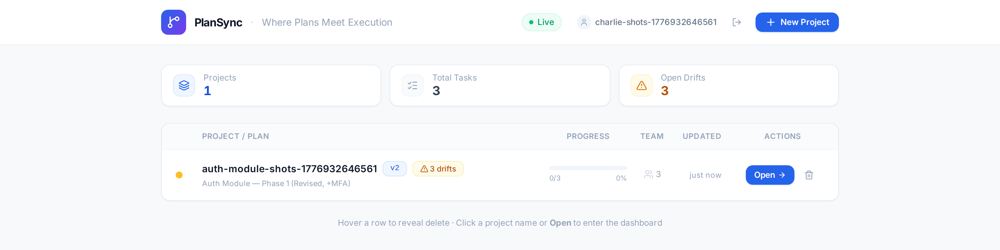
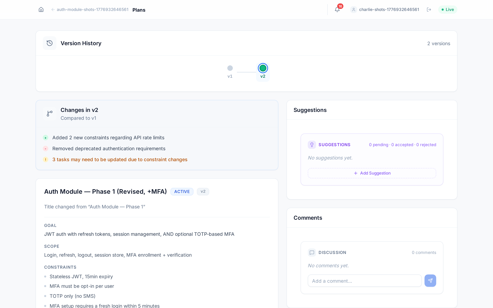
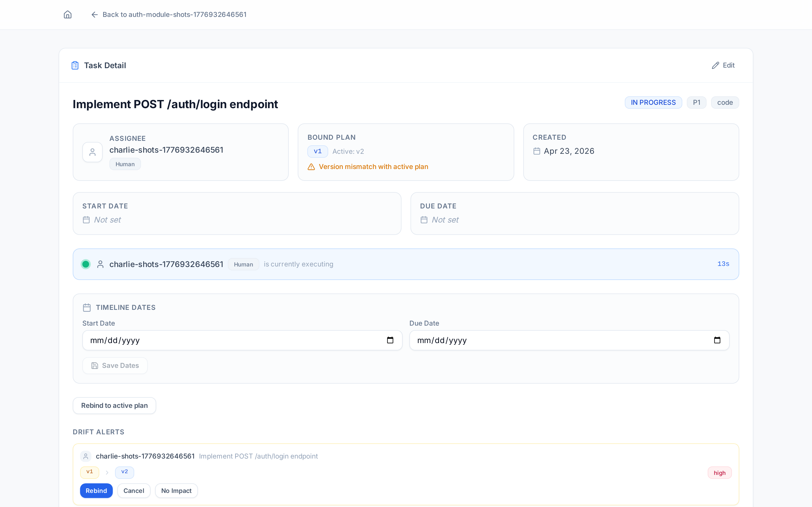

多个 AI agent 之间,唯一可信、可被强制的那份真相。
The single, enforceable source of truth between multiple AI agents — and the humans working alongside them.
每个团队都在让 agent 干活——而且是多个 agent、和人一起、跨会话并行。当计划在变、没人盯着时,谁来保证它们没在朝错误的方向狂奔? Teams aren't running one agent — they're running many, alongside humans, across sessions. When the plan shifts and no one's watching, who keeps them from sprinting the wrong way?
AI 协作里最致命的 Bug
不在代码里——在那份
没人知道已经过时的计划里。 The deadliest bug in AI collaboration isn't in the code — it's in the plan nobody knew was already stale.

vN 计划——人和 agent 引用的是同一个版本。

Bound v1 · Active v2——version mismatch 就是漂移的支点。"The agent literally
cannot finish
stale work." 不是提醒,不是告警——是服务端物理上拒绝一次过时的完成。
RUN_ABORTED,直到漂移被解决。可一键复现:drift-interrupt.sh。| 层 | 在哪运行 · Where | 挡住什么 · Blocks | 防篡改? · Tamper-proof |
|---|---|---|---|
| L1 | 服务端 (API + MCP) | 把漂移的 run 记成 complete;对暂停中的 run 发心跳 | ✓ 是 — 跑在服务端 |
| L2 | 客户端 (Claude Code) | 闸门设上后的「下一次工具调用」——mid-session 硬中断;hook 以 exit 2 打断 ai-loop(exit 1 曾静默失效 · R-206) | △ 否 — 跑在 agent 机器上 |
| L3 | CI (GitHub Action) | 合并 PR:关联任务 HIGH 漂移 / 超出交付物范围 | ✓ 是 — 跑在 CI |
require_pr_merged / require_commits_on_branch——证据严格 scope 到本次 run,没到就停在 awaiting_evidenceawaiting_evidence · R-210 只读解释端点 (#2962) · 顾问评审 only-advisory (#2966) · R-207 merge gate · R-208 分支归属真检查--host genie 直接接入,/exec 派发自动用 Genie 全 IDE 工具链。EMAIL_DOMAIN=amd.com 自动发漂移通知;远程经 ps-connect 一条 SSH 命令直接在服务器上启动。模型装不下这份状态,也不能被信任去自我强制——
所以我们把它做进了底座。